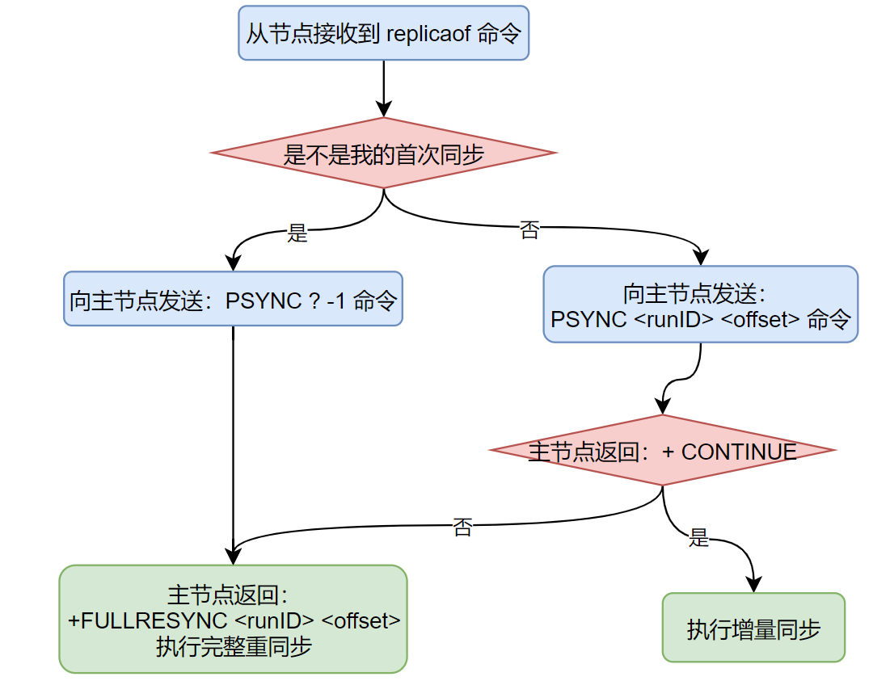

Redis的主从复制

阅读本文需要掌握的知识
- Redis的持久化RDB和AOF
为什么会有主从
因为单机会有问题呀，所以就要有主从。
对于单机单实例的Redis会有什么问题？
- 单机：单点故障
- 单机：存储空间有限
- 单机：连接数有限
- 单机：数据量的大的时候内存IO压力大
怎么解决这些问题
- 分布式架构解决方案的AKF原则：可用性，可扩展性，容错性
- X轴：全量镜像的实例扩展
- Y轴：水平拆分，按应用场景做数据分离
- Z轴：垂直拆分，对同一个场景的数据再次拆分
实例多了，此时可以解决单机的这些问题，但是又引入了一些别的问题
- 数据一致性（CAP中的C）
- 可用性（CAP中的A）
- 分区容错性（CAP中的P）
对于Redis来说
- 使用主从复制解决数据一致性
- 使用Sentinel和集群模式解决可用性
- CAP中的只能满足其二
这篇文章，我们主要看看Redis的主从复制怎么保证一致性的。
什么是数据一致性
数据一致性有
- 强一致性：等待所有的实例都同步完成才给客户端响应，此时数据不会丢，但是性能低
- 最终一致性（弱一致性）：只等待主节点写入成功就直接返回，从节点异步从主节点同步数据，发生主从切换的时候，数据可能会丢失。性能高
如何配置主从
- 在4.0之前是使用：salveof
- 在4.0之后，slaveof命令被替换成了replicaof（通过源码可以看到其实是将 slaveof 和 replicaof ，其实底层都是执行的 replicaofCommand 这个函数）

JTNDbXhHcmFwaE1vZGVsJTNFJTNDcm9vdCUzRSUzQ214Q2VsbCUyMGlkJTNEJTIyMCUyMiUyRiUzRSUzQ214Q2VsbCUyMGlkJTNEJTIyMSUyMiUyMHBhcmVudCUzRCUyMjAlMjIlMkYlM0UlM0NteENlbGwlMjBpZCUzRCUyMjIlMjIlMjB2YWx1ZSUzRCUyMiVFNCVCOCVCQiVFNiU5QyU4RCVFNSU4QSVBMSVFNSU5OSVBOCUyMiUyMHN0eWxlJTNEJTIycm91bmRlZCUzRDElM0J3aGl0ZVNwYWNlJTNEd3JhcCUzQmh0bWwlM0QxJTNCYWxpZ24lM0RjZW50ZXIlM0IlMjIlMjB2ZXJ0ZXglM0QlMjIxJTIyJTIwcGFyZW50JTNEJTIyMSUyMiUzRSUzQ214R2VvbWV0cnklMjB4JTNEJTIyLTI3OSUyMiUyMHklM0QlMjIxMjQlMjIlMjB3aWR0aCUzRCUyMjgyJTIyJTIwaGVpZ2h0JTNEJTIyMzklMjIlMjBhcyUzRCUyMmdlb21ldHJ5JTIyJTJGJTNFJTNDJTJGbXhDZWxsJTNFJTNDbXhDZWxsJTIwaWQlM0QlMjIzJTIyJTIwc3R5bGUlM0QlMjJlZGdlU3R5bGUlM0RvcnRob2dvbmFsRWRnZVN0eWxlJTNCcm91bmRlZCUzRDAlM0JvcnRob2dvbmFsTG9vcCUzRDElM0JqZXR0eVNpemUlM0RhdXRvJTNCaHRtbCUzRDElM0IlMjIlMjBlZGdlJTNEJTIyMSUyMiUyMHNvdXJjZSUzRCUyMjUlMjIlMjB0YXJnZXQlM0QlMjIyJTIyJTIwcGFyZW50JTNEJTIyMSUyMiUzRSUzQ214R2VvbWV0cnklMjByZWxhdGl2ZSUzRCUyMjElMjIlMjBhcyUzRCUyMmdlb21ldHJ5JTIyJTJGJTNFJTNDJTJGbXhDZWxsJTNFJTNDbXhDZWxsJTIwaWQlM0QlMjI0JTIyJTIwdmFsdWUlM0QlMjJyZXBsaWNhb2YlMjIlMjBzdHlsZSUzRCUyMmVkZ2VMYWJlbCUzQmh0bWwlM0QxJTNCYWxpZ24lM0RjZW50ZXIlM0J2ZXJ0aWNhbEFsaWduJTNEbWlkZGxlJTNCcmVzaXphYmxlJTNEMCUzQnBvaW50cyUzRCU1QiU1RCUzQiUyMiUyMHZlcnRleCUzRCUyMjElMjIlMjBjb25uZWN0YWJsZSUzRCUyMjAlMjIlMjBwYXJlbnQlM0QlMjIzJTIyJTNFJTNDbXhHZW9tZXRyeSUyMHglM0QlMjIwLjIlMjIlMjByZWxhdGl2ZSUzRCUyMjElMjIlMjBhcyUzRCUyMmdlb21ldHJ5JTIyJTNFJTNDbXhQb2ludCUyMHglM0QlMjIxMyUyMiUyMGFzJTNEJTIyb2Zmc2V0JTIyJTJGJTNFJTNDJTJGbXhHZW9tZXRyeSUzRSUzQyUyRm14Q2VsbCUzRSUzQ214Q2VsbCUyMGlkJTNEJTIyNSUyMiUyMHZhbHVlJTNEJTIyJUU0JUJCJThFJUU2JTlDJThEJUU1JThBJUExJUU1JTk5JUE4JTIyJTIwc3R5bGUlM0QlMjJyb3VuZGVkJTNEMSUzQndoaXRlU3BhY2UlM0R3cmFwJTNCaHRtbCUzRDElM0JhbGlnbiUzRGNlbnRlciUzQiUyMiUyMHZlcnRleCUzRCUyMjElMjIlMjBwYXJlbnQlM0QlMjIxJTIyJTNFJTNDbXhHZW9tZXRyeSUyMHglM0QlMjItMTA2JTIyJTIweSUzRCUyMjEyNCUyMiUyMHdpZHRoJTNEJTIyODIlMjIlMjBoZWlnaHQlM0QlMjIzOSUyMiUyMGFzJTNEJTIyZ2VvbWV0cnklMjIlMkYlM0UlM0MlMkZteENlbGwlM0UlM0MlMkZyb290JTNFJTNDJTJGbXhHcmFwaE1vZGVsJTNF主从复制的流程
Redis使用默认的异步复制，其特点是低延迟和高性能，是绝大多数 Redis 用例的自然复制模式。
当存在两个Redis实例，并且他们设置了主从关系，他们之间就会开始主从复制
正常的复制流程
- 主节点开启了RDB
- 复制偏移量：offset，执行复制的双方，都会维护这个偏移量，当发送了N个字节的数据后，偏移量就会加上N
- 主服务的复制积压缓冲区：默认1M，用来记录RDB发送后执行的写入命令
- 服务器运行的ID：runid
sequenceDiagram note over 从节点,主节点: 第一阶段：全量同步阶段 从节点->>主节点: 执行PSYNC，由于是首次同步：PSYNC ? -1 主节点->>主节点: 接收从节点的请求，发现是PSYNC ? -1，全量同步 主节点->>主节点: 此时主节点会立即生成一次RDB文件，并落磁盘 note right of 主节点: RDB落磁盘，磁盘IO 主节点->>主节点: 并使用复制积压缓冲区记录从现在开始执行的所有写命令，用于增量同步 主节点->>从节点: 把本地存储的全量RDB文件发送给从节点，同时携带runID和offset note right of 主节点: RDB传输给从节点，网络IO 从节点->>从节点: 接收到RDB文件，存储在自己本地，同时保存runID和offset note right of 从节点: RDB落磁盘 从节点->>从节点: 开始解析RDB文件，恢复数据 从节点->>主节点: RDB恢复完之后，再次同步：PSYNC请求主节点进行同步 note over 从节点,主节点: 第二阶段：增量同步阶段 主节点->>主节点: 接收从节点的请求，发现runID是我本机的并且缓冲区中offset也存在了，增量同步 主节点->>主节点: runID不是我本机的或者offset不在了，全量同步 主节点->>从节点: 根据从节点的offset，使用通用协议将增量数据（存在主节点缓冲区中的）传给从节点 note right of 主节点: 因为增量数据存在缓存中的，默认大小1M，所以需要判断offset是否在缓存中 从节点->>从节点: 接收到通用协议的增量数据，不会存储在自己本地的RDB文件中 从节点->>从节点: 将增量数据直接解析，将这部分数据恢复到自己的内存中 note over 从节点,主节点: 第三阶段：命令广播阶段 从节点->>主节点: 增量同步完成之后，主从服务器就会进入命令传播阶段 主节点->>从节点: 这时主服务器只要一直将自己执行的写命令发送给从服务器 从节点->>从节点: 从服务器只要一直接收并执行主服务器发来的写命令
就可以保证主从服务器一直保持一致了 note right of 主节点: 此时主节点仍然会记录复制积压缓冲区，用于从节点的断线重连恢复
JTNDbXhHcmFwaE1vZGVsJTNFJTNDcm9vdCUzRSUzQ214Q2VsbCUyMGlkJTNEJTIyMCUyMiUyRiUzRSUzQ214Q2VsbCUyMGlkJTNEJTIyMSUyMiUyMHBhcmVudCUzRCUyMjAlMjIlMkYlM0UlM0NteENlbGwlMjBpZCUzRCUyMjIlMjIlMjBzdHlsZSUzRCUyMmVkZ2VTdHlsZSUzRG9ydGhvZ29uYWxFZGdlU3R5bGUlM0Jyb3VuZGVkJTNEMCUzQm9ydGhvZ29uYWxMb29wJTNEMSUzQmpldHR5U2l6ZSUzRGF1dG8lM0JodG1sJTNEMSUzQiUyMiUyMGVkZ2UlM0QlMjIxJTIyJTIwc291cmNlJTNEJTIyMyUyMiUyMHRhcmdldCUzRCUyMjglMjIlMjBwYXJlbnQlM0QlMjIxJTIyJTNFJTNDbXhHZW9tZXRyeSUyMHJlbGF0aXZlJTNEJTIyMSUyMiUyMGFzJTNEJTIyZ2VvbWV0cnklMjIlMkYlM0UlM0MlMkZteENlbGwlM0UlM0NteENlbGwlMjBpZCUzRCUyMjMlMjIlMjB2YWx1ZSUzRCUyMiVFNCVCQiU4RSVFOCU4QSU4MiVFNyU4MiVCOSVFNiU4RSVBNSVFNiU5NCVCNiVFNSU4OCVCMCUyMHJlcGxpY2FvZiUyMCVFNSU5MSVCRCVFNCVCQiVBNCUyMiUyMHN0eWxlJTNEJTIycm91bmRlZCUzRDElM0J3aGl0ZVNwYWNlJTNEd3JhcCUzQmh0bWwlM0QxJTNCYWxpZ24lM0RjZW50ZXIlM0JmaWxsQ29sb3IlM0QlMjNkYWU4ZmMlM0JzdHJva2VDb2xvciUzRCUyMzZjOGViZiUzQiUyMiUyMHZlcnRleCUzRCUyMjElMjIlMjBwYXJlbnQlM0QlMjIxJTIyJTNFJTNDbXhHZW9tZXRyeSUyMHglM0QlMjItMjcwJTIyJTIweSUzRCUyMjEwMSUyMiUyMHdpZHRoJTNEJTIyMTU2JTIyJTIwaGVpZ2h0JTNEJTIyMjklMjIlMjBhcyUzRCUyMmdlb21ldHJ5JTIyJTJGJTNFJTNDJTJGbXhDZWxsJTNFJTNDbXhDZWxsJTIwaWQlM0QlMjI0JTIyJTIwc3R5bGUlM0QlMjJlZGdlU3R5bGUlM0RvcnRob2dvbmFsRWRnZVN0eWxlJTNCcm91bmRlZCUzRDAlM0JvcnRob2dvbmFsTG9vcCUzRDElM0JqZXR0eVNpemUlM0RhdXRvJTNCaHRtbCUzRDElM0JjdXJ2ZWQlM0QxJTNCJTIyJTIwZWRnZSUzRCUyMjElMjIlMjBzb3VyY2UlM0QlMjI4JTIyJTIwdGFyZ2V0JTNEJTIyMTAlMjIlMjBwYXJlbnQlM0QlMjIxJTIyJTNFJTNDbXhHZW9tZXRyeSUyMHJlbGF0aXZlJTNEJTIyMSUyMiUyMGFzJTNEJTIyZ2VvbWV0cnklMjIlMkYlM0UlM0MlMkZteENlbGwlM0UlM0NteENlbGwlMjBpZCUzRCUyMjUlMjIlMjB2YWx1ZSUzRCUyMiVFNiU5OCVBRiUyMiUyMHN0eWxlJTNEJTIyZWRnZUxhYmVsJTNCaHRtbCUzRDElM0JhbGlnbiUzRGNlbnRlciUzQnZlcnRpY2FsQWxpZ24lM0RtaWRkbGUlM0JyZXNpemFibGUlM0QwJTNCcG9pbnRzJTNEJTVCJTVEJTNCJTIyJTIwdmVydGV4JTNEJTIyMSUyMiUyMGNvbm5lY3RhYmxlJTNEJTIyMCUyMiUyMHBhcmVudCUzRCUyMjQlMjIlM0UlM0NteEdlb21ldHJ5JTIweCUzRCUyMjAuMTA5OCUyMiUyMHklM0QlMjIxJTIyJTIwcmVsYXRpdmUlM0QlMjIxJTIyJTIwYXMlM0QlMjJnZW9tZXRyeSUyMiUzRSUzQ214UG9pbnQlMjBhcyUzRCUyMm9mZnNldCUyMiUyRiUzRSUzQyUyRm14R2VvbWV0cnklM0UlM0MlMkZteENlbGwlM0UlM0NteENlbGwlMjBpZCUzRCUyMjYlMjIlMjBzdHlsZSUzRCUyMmVkZ2VTdHlsZSUzRG9ydGhvZ29uYWxFZGdlU3R5bGUlM0JjdXJ2ZWQlM0QxJTNCcm91bmRlZCUzRDAlM0JvcnRob2dvbmFsTG9vcCUzRDElM0JqZXR0eVNpemUlM0RhdXRvJTNCaHRtbCUzRDElM0IlMjIlMjBlZGdlJTNEJTIyMSUyMiUyMHNvdXJjZSUzRCUyMjglMjIlMjB0YXJnZXQlM0QlMjIxMyUyMiUyMHBhcmVudCUzRCUyMjElMjIlM0UlM0NteEdlb21ldHJ5JTIwcmVsYXRpdmUlM0QlMjIxJTIyJTIwYXMlM0QlMjJnZW9tZXRyeSUyMiUyRiUzRSUzQyUyRm14Q2VsbCUzRSUzQ214Q2VsbCUyMGlkJTNEJTIyNyUyMiUyMHZhbHVlJTNEJTIyJUU1JTkwJUE2JTIyJTIwc3R5bGUlM0QlMjJlZGdlTGFiZWwlM0JodG1sJTNEMSUzQmFsaWduJTNEY2VudGVyJTNCdmVydGljYWxBbGlnbiUzRG1pZGRsZSUzQnJlc2l6YWJsZSUzRDAlM0Jwb2ludHMlM0QlNUIlNUQlM0IlMjIlMjB2ZXJ0ZXglM0QlMjIxJTIyJTIwY29ubmVjdGFibGUlM0QlMjIwJTIyJTIwcGFyZW50JTNEJTIyNiUyMiUzRSUzQ214R2VvbWV0cnklMjB4JTNEJTIyLTAuMDY2NCUyMiUyMHklM0QlMjItMSUyMiUyMHJlbGF0aXZlJTNEJTIyMSUyMiUyMGFzJTNEJTIyZ2VvbWV0cnklMjIlM0UlM0NteFBvaW50JTIwYXMlM0QlMjJvZmZzZXQlMjIlMkYlM0UlM0MlMkZteEdlb21ldHJ5JTNFJTNDJTJGbXhDZWxsJTNFJTNDbXhDZWxsJTIwaWQlM0QlMjI4JTIyJTIwdmFsdWUlM0QlMjIlRTYlOTglQUYlRTQlQjglOEQlRTYlOTglQUYlRTYlODglOTElRTclOUElODQlRTklQTYlOTYlRTYlQUMlQTElRTUlOTAlOEMlRTYlQUQlQTUlMjIlMjBzdHlsZSUzRCUyMnJob21idXMlM0J3aGl0ZVNwYWNlJTNEd3JhcCUzQmh0bWwlM0QxJTNCYWxpZ24lM0RjZW50ZXIlM0JmaWxsQ29sb3IlM0QlMjNmOGNlY2MlM0JzdHJva2VDb2xvciUzRCUyM2I4NTQ1MCUzQiUyMiUyMHZlcnRleCUzRCUyMjElMjIlMjBwYXJlbnQlM0QlMjIxJTIyJTNFJTNDbXhHZW9tZXRyeSUyMHglM0QlMjItMjg0JTIyJTIweSUzRCUyMjE2MSUyMiUyMHdpZHRoJTNEJTIyMTg0JTIyJTIwaGVpZ2h0JTNEJTIyMzglMjIlMjBhcyUzRCUyMmdlb21ldHJ5JTIyJTJGJTNFJTNDJTJGbXhDZWxsJTNFJTNDbXhDZWxsJTIwaWQlM0QlMjI5JTIyJTIwc3R5bGUlM0QlMjJlZGdlU3R5bGUlM0RvcnRob2dvbmFsRWRnZVN0eWxlJTNCY3VydmVkJTNEMSUzQnJvdW5kZWQlM0QwJTNCb3J0aG9nb25hbExvb3AlM0QxJTNCamV0dHlTaXplJTNEYXV0byUzQmh0bWwlM0QxJTNCJTIyJTIwZWRnZSUzRCUyMjElMjIlMjBzb3VyY2UlM0QlMjIxMCUyMiUyMHRhcmdldCUzRCUyMjExJTIyJTIwcGFyZW50JTNEJTIyMSUyMiUzRSUzQ214R2VvbWV0cnklMjByZWxhdGl2ZSUzRCUyMjElMjIlMjBhcyUzRCUyMmdlb21ldHJ5JTIyJTJGJTNFJTNDJTJGbXhDZWxsJTNFJTNDbXhDZWxsJTIwaWQlM0QlMjIxMCUyMiUyMHZhbHVlJTNEJTIyJUU1JTkwJTkxJUU0JUI4JUJCJUU4JThBJTgyJUU3JTgyJUI5JUU1JThGJTkxJUU5JTgwJTgxJUVGJUJDJTlBUFNZTkMlMjAlM0YlMjAtMSUyMCVFNSU5MSVCRCVFNCVCQiVBNCUyMiUyMHN0eWxlJTNEJTIycm91bmRlZCUzRDElM0J3aGl0ZVNwYWNlJTNEd3JhcCUzQmh0bWwlM0QxJTNCYWxpZ24lM0RjZW50ZXIlM0JmaWxsQ29sb3IlM0QlMjNkYWU4ZmMlM0JzdHJva2VDb2xvciUzRCUyMzZjOGViZiUzQiUyMiUyMHZlcnRleCUzRCUyMjElMjIlMjBwYXJlbnQlM0QlMjIxJTIyJTNFJTNDbXhHZW9tZXRyeSUyMHglM0QlMjItMzY0JTIyJTIweSUzRCUyMjI0NCUyMiUyMHdpZHRoJTNEJTIyMTgyJTIyJTIwaGVpZ2h0JTNEJTIyMjklMjIlMjBhcyUzRCUyMmdlb21ldHJ5JTIyJTJGJTNFJTNDJTJGbXhDZWxsJTNFJTNDbXhDZWxsJTIwaWQlM0QlMjIxMSUyMiUyMHZhbHVlJTNEJTIyJUU0JUI4JUJCJUU4JThBJTgyJUU3JTgyJUI5JUU4JUJGJTk0JUU1JTlCJTlFJUVGJUJDJTlBJTI2bHQlM0JiciUyNmd0JTNCJTJCRlVMTFJFU1lOQyUyMCUyNmFtcCUzQmx0JTNCcnVuSUQlMjZhbXAlM0JndCUzQiUyMCUyNmFtcCUzQmx0JTNCb2Zmc2V0JTI2YW1wJTNCZ3QlM0IlMjZsdCUzQmJyJTI2Z3QlM0IlRTYlODklQTclRTglQTElOEMlRTUlQUUlOEMlRTYlOTUlQjQlRTklODclOEQlRTUlOTAlOEMlRTYlQUQlQTUlMjIlMjBzdHlsZSUzRCUyMnJvdW5kZWQlM0QxJTNCd2hpdGVTcGFjZSUzRHdyYXAlM0JodG1sJTNEMSUzQmFsaWduJTNEY2VudGVyJTNCZmlsbENvbG9yJTNEJTIzZDVlOGQ0JTNCc3Ryb2tlQ29sb3IlM0QlMjM4MmIzNjYlM0IlMjIlMjB2ZXJ0ZXglM0QlMjIxJTIyJTIwcGFyZW50JTNEJTIyMSUyMiUzRSUzQ214R2VvbWV0cnklMjB4JTNEJTIyLTM2Ni41JTIyJTIweSUzRCUyMjQwMiUyMiUyMHdpZHRoJTNEJTIyMTg3JTIyJTIwaGVpZ2h0JTNEJTIyNTglMjIlMjBhcyUzRCUyMmdlb21ldHJ5JTIyJTJGJTNFJTNDJTJGbXhDZWxsJTNFJTNDbXhDZWxsJTIwaWQlM0QlMjIxMiUyMiUyMHN0eWxlJTNEJTIyZWRnZVN0eWxlJTNEb3J0aG9nb25hbEVkZ2VTdHlsZSUzQmN1cnZlZCUzRDElM0Jyb3VuZGVkJTNEMCUzQm9ydGhvZ29uYWxMb29wJTNEMSUzQmpldHR5U2l6ZSUzRGF1dG8lM0JodG1sJTNEMSUzQiUyMiUyMGVkZ2UlM0QlMjIxJTIyJTIwc291cmNlJTNEJTIyMTMlMjIlMjB0YXJnZXQlM0QlMjIxOCUyMiUyMHBhcmVudCUzRCUyMjElMjIlM0UlM0NteEdlb21ldHJ5JTIwcmVsYXRpdmUlM0QlMjIxJTIyJTIwYXMlM0QlMjJnZW9tZXRyeSUyMiUyRiUzRSUzQyUyRm14Q2VsbCUzRSUzQ214Q2VsbCUyMGlkJTNEJTIyMTMlMjIlMjB2YWx1ZSUzRCUyMiVFNSU5MCU5MSVFNCVCOCVCQiVFOCU4QSU4MiVFNyU4MiVCOSVFNSU4RiU5MSVFOSU4MCU4MSVFRiVCQyU5QSUyNmx0JTNCYnIlMjZndCUzQlBTWU5DJTIwJTI2YW1wJTNCbHQlM0JydW5JRCUyNmFtcCUzQmd0JTNCJTIwJTI2YW1wJTNCbHQlM0JvZmZzZXQlMjZhbXAlM0JndCUzQiUyMCVFNSU5MSVCRCVFNCVCQiVBNCUyMiUyMHN0eWxlJTNEJTIycm91bmRlZCUzRDElM0J3aGl0ZVNwYWNlJTNEd3JhcCUzQmh0bWwlM0QxJTNCYWxpZ24lM0RjZW50ZXIlM0JmaWxsQ29sb3IlM0QlMjNkYWU4ZmMlM0JzdHJva2VDb2xvciUzRCUyMzZjOGViZiUzQiUyMiUyMHZlcnRleCUzRCUyMjElMjIlMjBwYXJlbnQlM0QlMjIxJTIyJTNFJTNDbXhHZW9tZXRyeSUyMHglM0QlMjItMTA2JTIyJTIweSUzRCUyMjI0MSUyMiUyMHdpZHRoJTNEJTIyMTY5JTIyJTIwaGVpZ2h0JTNEJTIyNDElMjIlMjBhcyUzRCUyMmdlb21ldHJ5JTIyJTJGJTNFJTNDJTJGbXhDZWxsJTNFJTNDbXhDZWxsJTIwaWQlM0QlMjIxNCUyMiUyMHN0eWxlJTNEJTIyZWRnZVN0eWxlJTNEb3J0aG9nb25hbEVkZ2VTdHlsZSUzQmN1cnZlZCUzRDElM0Jyb3VuZGVkJTNEMCUzQm9ydGhvZ29uYWxMb29wJTNEMSUzQmpldHR5U2l6ZSUzRGF1dG8lM0JodG1sJTNEMSUzQmV4aXRYJTNEMC41JTNCZXhpdFklM0QxJTNCZXhpdER4JTNEMCUzQmV4aXREeSUzRDAlM0IlMjIlMjBlZGdlJTNEJTIyMSUyMiUyMHNvdXJjZSUzRCUyMjE4JTIyJTIwdGFyZ2V0JTNEJTIyMTElMjIlMjBwYXJlbnQlM0QlMjIxJTIyJTNFJTNDbXhHZW9tZXRyeSUyMHJlbGF0aXZlJTNEJTIyMSUyMiUyMGFzJTNEJTIyZ2VvbWV0cnklMjIlMkYlM0UlM0MlMkZteENlbGwlM0UlM0NteENlbGwlMjBpZCUzRCUyMjE1JTIyJTIwdmFsdWUlM0QlMjIlRTUlOTAlQTYlMjIlMjBzdHlsZSUzRCUyMmVkZ2VMYWJlbCUzQmh0bWwlM0QxJTNCYWxpZ24lM0RjZW50ZXIlM0J2ZXJ0aWNhbEFsaWduJTNEbWlkZGxlJTNCcmVzaXphYmxlJTNEMCUzQnBvaW50cyUzRCU1QiU1RCUzQiUyMiUyMHZlcnRleCUzRCUyMjElMjIlMjBjb25uZWN0YWJsZSUzRCUyMjAlMjIlMjBwYXJlbnQlM0QlMjIxNCUyMiUzRSUzQ214R2VvbWV0cnklMjB4JTNEJTIyLTAuMDUwMiUyMiUyMHJlbGF0aXZlJTNEJTIyMSUyMiUyMGFzJTNEJTIyZ2VvbWV0cnklMjIlM0UlM0NteFBvaW50JTIwYXMlM0QlMjJvZmZzZXQlMjIlMkYlM0UlM0MlMkZteEdlb21ldHJ5JTNFJTNDJTJGbXhDZWxsJTNFJTNDbXhDZWxsJTIwaWQlM0QlMjIxNiUyMiUyMHN0eWxlJTNEJTIyZWRnZVN0eWxlJTNEb3J0aG9nb25hbEVkZ2VTdHlsZSUzQmN1cnZlZCUzRDElM0Jyb3VuZGVkJTNEMCUzQm9ydGhvZ29uYWxMb29wJTNEMSUzQmpldHR5U2l6ZSUzRGF1dG8lM0JodG1sJTNEMSUzQiUyMiUyMGVkZ2UlM0QlMjIxJTIyJTIwc291cmNlJTNEJTIyMTglMjIlMjB0YXJnZXQlM0QlMjIxOSUyMiUyMHBhcmVudCUzRCUyMjElMjIlM0UlM0NteEdlb21ldHJ5JTIwcmVsYXRpdmUlM0QlMjIxJTIyJTIwYXMlM0QlMjJnZW9tZXRyeSUyMiUyRiUzRSUzQyUyRm14Q2VsbCUzRSUzQ214Q2VsbCUyMGlkJTNEJTIyMTclMjIlMjB2YWx1ZSUzRCUyMiVFNiU5OCVBRiUyMiUyMHN0eWxlJTNEJTIyZWRnZUxhYmVsJTNCaHRtbCUzRDElM0JhbGlnbiUzRGNlbnRlciUzQnZlcnRpY2FsQWxpZ24lM0RtaWRkbGUlM0JyZXNpemFibGUlM0QwJTNCcG9pbnRzJTNEJTVCJTVEJTNCJTIyJTIwdmVydGV4JTNEJTIyMSUyMiUyMGNvbm5lY3RhYmxlJTNEJTIyMCUyMiUyMHBhcmVudCUzRCUyMjE2JTIyJTNFJTNDbXhHZW9tZXRyeSUyMHglM0QlMjItMC4wOTUzJTIyJTIweSUzRCUyMjElMjIlMjByZWxhdGl2ZSUzRCUyMjElMjIlMjBhcyUzRCUyMmdlb21ldHJ5JTIyJTNFJTNDbXhQb2ludCUyMGFzJTNEJTIyb2Zmc2V0JTIyJTJGJTNFJTNDJTJGbXhHZW9tZXRyeSUzRSUzQyUyRm14Q2VsbCUzRSUzQ214Q2VsbCUyMGlkJTNEJTIyMTglMjIlMjB2YWx1ZSUzRCUyMiVFNCVCOCVCQiVFOCU4QSU4MiVFNyU4MiVCOSVFOCVCRiU5NCVFNSU5QiU5RSVFRiVCQyU5QSUyQiUyMENPTlRJTlVFJTIyJTIwc3R5bGUlM0QlMjJyaG9tYnVzJTNCd2hpdGVTcGFjZSUzRHdyYXAlM0JodG1sJTNEMSUzQmFsaWduJTNEY2VudGVyJTNCZmlsbENvbG9yJTNEJTIzZjhjZWNjJTNCc3Ryb2tlQ29sb3IlM0QlMjNiODU0NTAlM0IlMjIlMjB2ZXJ0ZXglM0QlMjIxJTIyJTIwcGFyZW50JTNEJTIyMSUyMiUzRSUzQ214R2VvbWV0cnklMjB4JTNEJTIyLTEzNCUyMiUyMHklM0QlMjIzMjElMjIlMjB3aWR0aCUzRCUyMjE4NCUyMiUyMGhlaWdodCUzRCUyMjM4JTIyJTIwYXMlM0QlMjJnZW9tZXRyeSUyMiUyRiUzRSUzQyUyRm14Q2VsbCUzRSUzQ214Q2VsbCUyMGlkJTNEJTIyMTklMjIlMjB2YWx1ZSUzRCUyMiVFNiU4OSVBNyVFOCVBMSU4QyVFNSVBMiU5RSVFOSU4NyU4RiVFNSU5MCU4QyVFNiVBRCVBNSUyMiUyMHN0eWxlJTNEJTIycm91bmRlZCUzRDElM0J3aGl0ZVNwYWNlJTNEd3JhcCUzQmh0bWwlM0QxJTNCYWxpZ24lM0RjZW50ZXIlM0JmaWxsQ29sb3IlM0QlMjNkNWU4ZDQlM0JzdHJva2VDb2xvciUzRCUyMzgyYjM2NiUzQiUyMiUyMHZlcnRleCUzRCUyMjElMjIlMjBwYXJlbnQlM0QlMjIxJTIyJTNFJTNDbXhHZW9tZXRyeSUyMHglM0QlMjItNDIlMjIlMjB5JTNEJTIyNDE3JTIyJTIwd2lkdGglM0QlMjI5OCUyMiUyMGhlaWdodCUzRCUyMjM3JTIyJTIwYXMlM0QlMjJnZW9tZXRyeSUyMiUyRiUzRSUzQyUyRm14Q2VsbCUzRSUzQyUyRnJvb3QlM0UlM0MlMkZteEdyYXBoTW9kZWwlM0U=没有磁盘参与（没有RDB）的主从复制流程
- 主节点没有开启RDB快照
正常情况下，一个全量重同步要求在磁盘上创建一个 RDB 文件，然后将它从磁盘加载进内存，然后 slave以此进行数据同步。
如果磁盘性能很低的话，这对 master 是一个压力很大的操作。Redis 2.8.18 是第一个支持无磁盘复制的版本。在此设置中，子进程直接发送 RDB 文件给 slave，无需使用磁盘作为中间储存介质。
关闭RDB但是开启AOF的主从复制流程
每一次同步都会重新生成AOF文件。就是没有增量同步的概念了。
这是因为：RDB文件中记录了主从的关系；可以实现增量同步； 而AOF中没有记录主从关系，所以每次都是增量同步。
这个可以看看源码确认一下
心跳检测
在命令传播阶段，从服务器默认会以每秒一次的频率，向主服务器发送命令：
REPLCONF ACK <replication_offset>发送心跳检测有三个作用
- 检测主从服务器的网络连接状态
- 实现min-slave机制
min-slaves-to-write 3
min-slaves-max-lag 10
//表示从节点数量少于3个，或者3个从节点的延迟大于10秒，则主节点拒绝写入。- 检测命令丢失：短暂的断线重连，会导致命令广播时效，此时通过offset会检测命令丢失，然后使用主节点的缓冲区增量同步
主从复制对于过期key怎么处理
一个key拥有过期时间，通过主从复制到从节点之后。
此时主节点和从节点都有这个拥有过期时间的key；
可以这个key到期之后，主节点和从节点分别会怎么处理呢？
主节点处理方式
当 Key 到期时，主节点会根据自身配置执行相应的策略来删除该 Key。具体来说，Redis 支持两种策略：
- 被动删除：当主节点接收到客户端请求对已经过期的 Key 进行读写操作时，主动检查并删除该 Key。
- 主动删除：主节点会周期性地对过期数据进行扫描和清理，以及通过 BGREWRITEAOF 命令将过期数据记录到 AOF 文件中，以便在数据恢复时能够正确处理过期数据。
从节点处理方式
与主节点不同的是，从节点不能直接删除key，因为从节点只能通过主节点同步数据，没有写入权限，只能间接删除 Key。
具体来说，当主节点删除某个 Key ，会把这个命令发给从节点，从节点就会执行该命令，删除相应的 Key。
如果从节点在 Key 过期之后，一直没有收到主节点的命令日志（即主节点在过期之前没有执行相关删除操作），那么这个 Key 就会一直留在从节点中
主从复制的源码分析
待补充

一些问答
问
Redis的主从复制是通过RDB文件来实现的，如果主的数据很多，假设为10GB，此时生成的RDB文件也是10GB吗？那么传给从节点的时候，也是10GB吗？另外，从节点宕机之后，当再次重启的时候，主节点还是要发送RDB文件给这个从节点，此时发动的RDB文件是全量的，还是增量的？
答
在 Redis 的主从复制中，通过 RDB 文件来进行数据同步。答案如下：
- 主节点生成的 RDB 文件大小与其保存的数据量成正比关系，因此如果主节点的数据量很大，那么生成的 RDB 文件也会很大。
- 从节点初始化时，需要将主节点上的 RDB 文件传输到本地进行加载。在 Redis 复制中，一般情况下是采用增量同步的方式，即首先进行全量同步，然后再进行增量同步。因此，当从节点刚开始进行复制时，需要下载完整的 RDB 文件。
- 当从节点宕机重启时，如果它断开连接的时间太长，可能会导致与主节点的同步信息丢失。这种情况下，从节点需要重新进行全量同步，即接收全新的 RDB 文件，并从最近的复制偏移量处开始进行增量同步。如果与主节点的同步信息没有丢失，那么就可以直接从上次同步的位置继续进行增量同步。
需要注意的是，Redis 不仅支持 RDB 文件方式进行同步，还支持 AOF（Append Only File）文件方式进行同步。AOF 文件记录了所有写入 Redis 的命令，在主节点执行命令时，会将命令写入 AOF 文件并发送给从节点进行同步，因此 AOF 方式可以更快地进行数据同步，但也需要更多的磁盘空间。
问
如何实现的增量同步？ 是主节点只发送一部分RDB文件到从节点吗？
答
Redis 复制采用增量同步的方式，其基本流程如下：
- 从节点向主节点发送 SYNC 命令，请求与主节点建立连接。
- 主节点接收到 SYNC 命令后，开启一个后台线程，将当前数据库中的数据保存为 RDB 文件，并将 RDB 文件发送给从节点。
- 从节点接收到 RDB 文件之后，将其加载到内存中，然后向主节点发送 PSYNC 命令，请求继续复制数据。PSYNC 命令包含两个参数：第一个参数是主节点的 ID，第二个参数是从节点的复制偏移量（也可以是主节点的运行 ID）。
- 主节点接收到 PSYNC 命令后，判断从节点和主节点的同步状态。如果从节点的复制偏移量小于等于主节点的复制偏移量，那么主节点将以增量同步的方式继续复制数据；否则，主节点会以全量同步的方式重新开始复制数据。
在增量同步的过程中，主节点不会将整个 RDB 文件发送给从节点，而是根据从节点的复制偏移量，只向从节点发送部分数据。具体地说，主节点会将自己执行的写命令以及对应的键值对发送给从节点。从节点接收到这些写命令后，在本地进行执行，从而实现了数据的增量同步。
需要注意的是，由于 Redis 是单线程的，在进行复制时会有一定的性能瓶颈。因此，如果数据量很大或者写入操作很频繁，可能会影响主节点的性能和响应速度。在这种情况下，可以考虑使用 Redis Cluster 或者其他分布式数据库系统，以提高系统的吞吐量和并发性能。
问
那么从节点会将这部分增量数据，也保存在自己的RDB中嘛？
答
在 Redis 的增量同步过程中，从节点不会将复制的增量数据保存到自己的 RDB 文件中。因为 RDB 文件是由主节点生成并发送给从节点的，从节点只需要将接收到的 RDB 文件加载到内存中即可。
增量同步的过程中，主节点会将自己执行的写命令以及对应的键值对发送给从节点，从节点接收到这些写命令后，在本地进行执行。因此，如果从节点需要将接收到的增量数据保存到自己的 RDB 文件中，需要自己开发相关的逻辑实现。一般来说，这种需求可能不那么常见，因为增量同步已经可以很好的保证了主从节点之间的数据一致性，而且从节点的主要作用是提高系统的读性能和容错能力，因此一般不需要在从节点上保存完整的数据备份。
问
那么当主节点宕机的时候，从节点被选为新的主节点，此时从节点要重新生成RDB文件嘛？
答
当 Redis 的主节点宕机时，如果存在从节点，从节点会尝试自动切换为新的主节点。在成为新的主节点之后，从节点需要重新生成 RDB 文件以保存当前的数据状态。
因为 Redis 的 RDB 文件是由主节点生成并发送给从节点，当从节点成为新的主节点时，原先的 RDB 文件已经失效了。为了保证数据的完整性和一致性，从节点需要重新持久化当前的数据状态，并生成新的 RDB 文件。同时，从节点也需要通知其他从节点和客户端进行状态同步，确保整个集群的数据状态一致。
在一些情况下，从节点可能会因为网络问题等原因与主节点失去联系，此时如果有新的写入操作，从节点可能无法同步这些操作。为了避免这种情况发生，可以设置主从节点之间的心跳检测和故障转移机制，及时发现主节点的故障并将从节点切换为新的主节点。这样就可以更好地保证集群的高可用性和数据一致性。
问
Redis的主从复制，在首次通过RDB同步完成之后，之后的同步都是增量同步吗？都是使用主节点中的缓存replication backlog来实现的吗？ 还是说：当同步完成之后，主节点的缓存replication backlog就不用了，而是使用命令广播的形式，主节点发生一个命令，就传给一个命令给从节点，从而实现主从复制？ 是哪一种方式？
答
这个回答不好，我就不贴了，我会看完源码之后，在写进来。